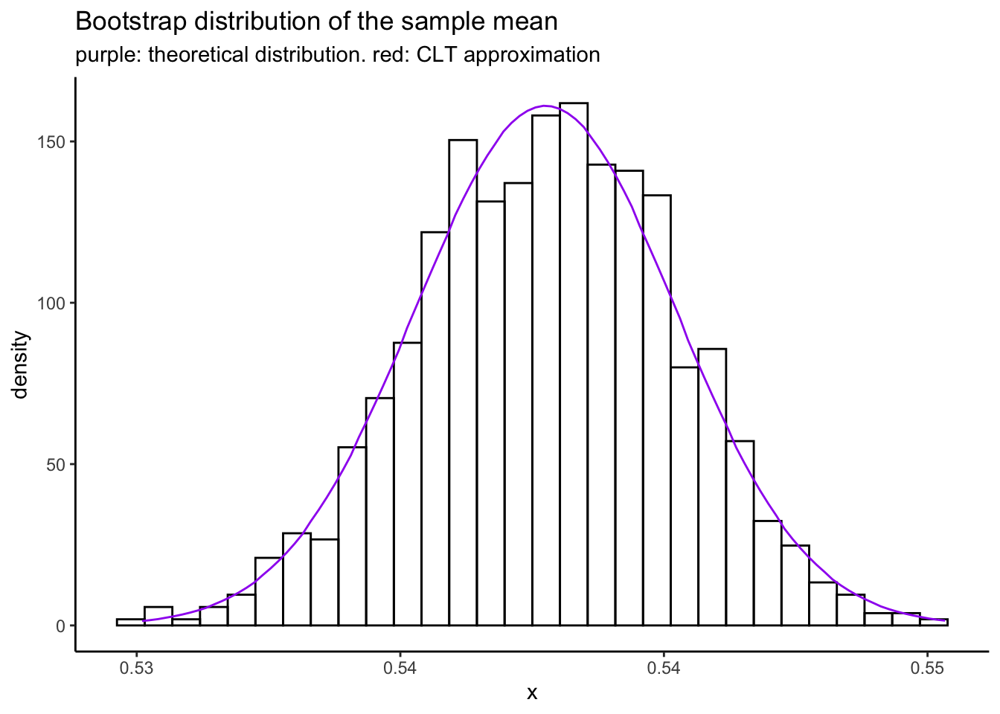

Chapter 7 The Bootstrap
This chapter introduces the Bootstrap and shows how you can use simulation to enhance your statistical thinking. We use datasets from MIPS which can be downloaded here: https://www.tudelft.nl/en/eemcs/the-faculty/departments/applied-mathematics/applied-probability/education/mips/.
7.1 The Bootstrap (Chapter 18)
The bootstrap is one of the most foundational computational tools in modern statistics. It as important on the computation side as basic calculus is on the math side. Any time you have an estimator and are interested in its repeated sampling properties (which is much of what statistics is), you can simulate data, compute the estimator, and just look at the results to get an idea of what’s going on. This is called the “parametric” bootstrap, and you have been doing it for the whole course in these supplementary notes.
This chapter introduces the “empirical” bootstrap, which allows you to use this idea when you don’t know the distribution of the data! The idea is to sample with replacement from the data that you have. A lot of the statistical properties of estimators are still recoverable under this type of sampling.
It seems like magic. Indeed, the name “bootstrap” comes from the old expression “lift yourself up by your bootstraps,” which roughly means to do something seemingly impossible or contradictory in order to better your situation. One of the best-named concepts in all of stats, in my opinion.
7.1.1 Empirical bootstrap: Old Faithful data
Recall the Old Faithful data: \(n = 272\) measurements of the waiting time to eruption \(X_{i}\) of the Old Faithful Geyser. A statistical model for these data was given as \[ X_{i} \overset{iid}{\sim}F_{\mu}, i = 1,\ldots,n \] where \(\mu = E(X_{i})\) is the unknown parameter to be estimated. We can estimate \(\mu\) using the sample mean: \(\hat{\mu} = \bar{X}\) which for these data gives \(\hat{\mu} = 209.27\).
But is this the whole story? No. The data are random: if we repeated this experiment we would get different measurements, and a different value for \(\hat{\mu}\). So \(\hat{\mu}\) is random too, because it depends on the data, which are random. So \(\hat{\mu}\) has a probability distribution, called its sampling distribution, and we can quantify uncertainty in our estimate for \(\hat{\mu}\) by analyzing this distribution. Or we could, if we knew what it was!
For this simple example, we actually do know the sampling distribution of \(\hat{\mu}\): by the CLT, it’s \[\hat{\mu} \overset{approx}{\sim}\text{N}\left(\mu,\sigma/\sqrt{n}\right)\] where \(\mu = E(X_{i})\) and \(\sigma^{2} = \text{Var}(X_{i})\). In more complicated problems, we wouldn’t know this. In fact, it’s almost never known. So how can the notion of using the sampling distribution to assess uncertainty in an estimate be useful in practice?
This is where the bootstrap comes in. The empirical bootstrap refers to the following algorithm:
Input: sample \(X_{1},\ldots,X_{n}\), estimate \(\hat{\mu}\), number of desired bootstrap replicates \(B\),
For: \(b = 1,\ldots,B\), do:
Take a bootstrap sample \(X^{*}_{1},\ldots,X^{*}_{n}\) independently with replacement from \(X_{1},\ldots,X_{n}\),
Compute the bootstrap estimate \(\hat{\mu}^{*}_{b}\) using the bootstrap sample,
Output: \(\hat{\mu}^{*}_{1},\ldots,\hat{\mu}^{*}_{B}\), a sample from the sampling distribution of \(\hat{\mu}\).
This seems like magic: we got a sample from the sampling distribution of our estimator, without knowing anything about it mathematically. Let’s do this in code:
library(tidyverse)
library(patchwork)# Read in old faithful, copied from chapter 1:
oldfaithful <- readr::read_csv(
file = "data/MIPSdata/oldfaithful.txt", # Tell it where the file is
col_names = "time", # Tell it that the first row is NOT column names, and at the same time, tell it what name you want for the column.
col_types = "n" # Tell it that there is one column, and it is "numeric" (n)
)
# Check what was read in using the dplyr::glimpse() function
dplyr::glimpse(oldfaithful)Rows: 272
Columns: 1
$ time <dbl> 216, 108, 200, 137, 272, 173, 282, 216, 117, 261, 110, 235, 252, 105, 282, 130, 105, 288, 96, 255, 108, 105, 207, 184, 272, 216, 118, 245, 231, 266, 258, 268, 202, 242, 230, 121, 112, 290, 110…# Bootstrap: sample with replacement
set.seed(45356) # So you can reproduce my results
B <- 1000 # Number of bootstrap resamples to take
n <- nrow(oldfaithful) # Sample size
bootstrapmeans <- numeric(B)
for (b in 1:B) {
# Draw a bootstrap sample
bootstrapsample <- sample(oldfaithful$time,n,replace = TRUE)
# Compute the bootstrap estimate
bootstrapmeans[b] <- mean(bootstrapsample)
}
# Plot a hisrogram and density estimate, along with
# the normal approximation
tibble(x = bootstrapmeans) %>%
ggplot(aes(x = x)) +
theme_classic() +
geom_histogram(aes(y = ..density..),bins = 20,colour = "black",fill = "transparent") +
geom_density() +
stat_function(fun = dnorm,args = list(mean = normalapproxmean,sd = normalapproxsd),col = "red") +
scale_x_continuous(breaks = seq(190,230,by=5))The histogram and black kernel density estimate curve are obtained using the empirical bootstrap algorithm. The red curve is obtained using the CLT approximation to the sampling distribution of \(\hat{\mu}\).
Exercise: compute the mean and standard deviation that I secretly computed to
fit that normal approximation. What are the values normalapproxmean and normalapproxsd?
An even more remarkable use of the empirical bootstrap is as follows. Suppose we are interested in the error in our estimate: \[ \hat{\mu} - \mu \] This is a random variable with an unknown sampling distribution, and further, it depends on the unknown parameter \(\mu\). We can’t even compute the value of this random variable from our sample! But, we can use the empirical bootstrap to get its sampling distribution. Consider the following:
Input: sample \(X_{1},\ldots,X_{n}\), estimate \(\hat{\mu}\), number of desired bootstrap replicates \(B\),
For: \(b = 1,\ldots,B\), do:
Take a bootstrap sample \(X^{*}_{1},\ldots,X^{*}_{n}\) independently with replacement from \(X_{1},\ldots,X_{n}\),
Compute the bootstrap estimate \(\hat{\mu}^{*}_{b}\) using the bootstrap sample,
Compute the bootstrap estimate \((\hat{\mu} - \mu)^{*}_{b} = \hat{\mu}^{*}_{b} - \hat{\mu}\) using the bootstrap sample,
Output: \((\hat{\mu} - \mu)^{*}_{1},\ldots,(\hat{\mu} - \mu)^{*}_{B}\), a sample from the sampling distribution of \((\hat{\mu} - \mu)\).
Notice that we compute \((\hat{\mu} - \mu)^{*}_{b}\) without knowing \(\mu\).
We can do this in code as follows:
# Bootstrap: sample with replacement
set.seed(45356) # So you can reproduce my results
B <- 1000 # Number of bootstrap resamples to take
n <- nrow(oldfaithful) # Sample size
bootstraperrors <- numeric(B)
for (b in 1:B) {
# Draw a bootstrap sample
bootstrapsample <- sample(oldfaithful$time,n,replace = TRUE)
# Compute the bootstrap mean
bootstrapmean <- mean(bootstrapsample)
# Compute the bootstrap estimate
bootstraperrors[b] <- bootstrapmean - mean(oldfaithful$time)
}
# For the record, we could have just done
# bootstraperrors <- bootstrapmeans - mean(oldfaithful$time)
# Plot a hisrogram and density estimate, along with
# the normal approximation
tibble(x = bootstraperrors) %>%
ggplot(aes(x = x)) +
theme_classic() +
geom_histogram(aes(y = ..density..),bins = 20,colour = "black",fill = "transparent") +
geom_density() +
stat_function(fun = dnorm,args = list(mean = normalapproxmeanerror,sd = normalapproxsderror),col = "red") +
scale_x_continuous(breaks = seq(-14,14,by=2))Exercise: again, how did I get the values of normalapproxmeanerror and normalapproxsderror?
Exercise: compute an estimate of \(P(|\bar{X}_{n} - \mu| > 5)\). Using the
above set.seed(45356) I got the following:
[1] 0.23Hint: consider the sample proportion of \(\bar{X}_{n} - \mu\) that have absolute value greater than \(5\).
Exercise: even this \(P(|\bar{X}_{n} - \mu| > 5)\) is just an estimate, and
we can use the bootstrap to sample from its sampling distribution to quantify
uncertainty in it. Now, repeat the entire bootstrap procedure \(1000\) times and
plot a histogram and kernel density estimate of \(P(|\bar{X}_{n} - \mu| > 5)\).
I got the following with set.seed(8768432) and \(200\) bootstrap replicates:

So it looks like we can be pretty sure the absolute error won’t be more than \(0.27\).
7.1.2 Parametric Bootstrap: software data
The empirical bootstrap is used to sample from the sampling distribution of an estimator without knowing the distribution of the data. The parametric bootstrap is used to sample from the sampling distribution of an estimator when you know the family of distributions \(F_{\theta}\) (like “Exponential” or “Normal” or “Poisson”) from which the data is drawn, but you don’t know the value of the parameter \(\theta\).
Recall the **software data*:
head data/MIPSdata/software.txt
wc -l data/MIPSdata/software.txt30
113
81
115
9
2
91
112
15
138
136 data/MIPSdata/software.txtsoftware <- readr::read_csv(
file = "data/MIPSdata/software.txt",
col_names = "time",
col_types = "n"
)
glimpse(software)Rows: 136
Columns: 1
$ time <dbl> 30, 113, 81, 115, 9, 2, 91, 112, 15, 138, 50, 77, 24, 108, 88, 670, 120, 26, 114, 325, 55, 242, 68, 422, 180, 10, 1146, 600, 15, 36, 4, 0, 8, 227, 65, 176, 58, 457, 300, 97, 263, 452, 255, 197…One possible model for these data is \(X_{i}\overset{iid}{\sim}\text{Exponential}(\lambda)\) with \(\lambda\) being the rate of failures of the software: \(E(X_{i}) = \lambda^{-1}\).
We can estimate \(\hat{\lambda} = \bar{X}^{-1}\) and plot the CDF \(F_{\hat{\theta}}\) of the estimated \(\text{Exponential}(\hat{\lambda})\) distribution against the empirical CDF \(\hat{F}_{n}\) of the data. Of interest is the maximum possible error in estimating the CDF: \(T_{ks} = \text{sup}_{x\in\mathbb{R}}|F_{\hat{\theta}}(x) - \hat{F}_{n}(x)|\). The “KS” stands for “Kolmogorov-Smirnov,” who used this error in some statistical theory in the early 20th century, and so \(T_{ks}\) is sometimes called the “Kolmogorov-Smirnov distance.” It’s also sometimes called the “Total Variation” distance. It is the length of the red segment in the following plot:
lambdahat <- 1/mean(software$time)
samppoints <- seq(0,3000,by=.1)
expcdf <- pexp(samppoints,rate = lambdahat)
empcdf <- ecdf(software$time)
tksestimate <- max(abs(expcdf - empcdf(samppoints)))
whereisthetks <- which.max(abs(expcdf - empcdf(samppoints)))
tibble(x = samppoints,y = expcdf) %>%
ggplot(aes(x = x,y = y)) +
theme_classic() +
geom_line() +
stat_function(fun = empcdf,linetype = "dotdash") +
geom_segment(aes(x = samppoints[whereisthetks],y = expcdf[whereisthetks],xend = samppoints[whereisthetks],yend = empcdf(samppoints[whereisthetks])),colour = 'red')
What a complicated statistic!
The statistic \(T_{ks}\) is a random variable because it depends on the data through the statistic \(\hat{F}_{n}\). We can use the parametric bootstrap to sample from its sampling distribution. Consider the following algorithm:
Input: sample \(X_{1},\ldots,X_{n}\overset{iid}{\sim}F_{\lambda}\) with \(F\) known and \(\theta\) unknown, estimate \(\hat{\lambda}\), number of desired bootstrap replicates \(B\),
For: \(b = 1,\ldots,B\), do:
Take a bootstrap sample \(X^{*}_{1},\ldots,X^{*}_{n}\overset{iid}{\sim}F_{\hat{\lambda}}\)
Compute the bootstrap estimate \(\hat{\lambda}^{*}_{b}\) using the bootstrap sample,
Output: \(\hat{\lambda}^{*}_{1},\ldots,\hat{\lambda}^{*}_{B}\), a sample from the sampling distribution of \(\hat{\lambda}^{*}\).
Let’s use this algorithm to get a bootstrap sample from the sampling distribution of \(T_{ks}\):
set.seed(97876856)
compute_tks <- function() {
samppoints <- seq(0,3000,by=.1)
n <- nrow(software)
samp <- rexp(n,rate = lambdahat)
ecdfboot <- ecdf(samp)(samppoints)
expcdf <- pexp(samppoints,rate = lambdahat)
max(abs(ecdfboot - expcdf))
}
B <- 1000
tksboot <- numeric(B)
for (b in 1:B) tksboot[b] <- compute_tks()
tibble(x = tksboot) %>%
ggplot(aes(x = x)) +
theme_classic() +
geom_histogram(aes(y = ..density..),bins = 20,colour = "black",fill = "transparent") +
geom_density() +
scale_x_continuous(breaks = c(seq(0,.2,by=.05),.176)) +
coord_cartesian(xlim = c(0,.2))
Exercise: the above compute_tks() is a bit tricky. Write out the exact algorithm
I use to compute \(T_{ks}\). Basically I compute both the ECDF and the parametric estimated
CDF at a really fine grid of points and then take the max difference– this question
is asking you to formalize this into an algorithm (sequence of steps) using
mathematical notation, like I’ve done for the bootstraps.
7.1.3 Extended example: the standard error of a proportion
Dozens of news articles are published every day with claims that “xx% of Canadians say that yy,” where xx is some percentage and yy is some claim that the news company wants to make. These news articles most often only report point estimates– the “xx%.” They don’t tend to report the standard error of these estimates, which give you a measure of the variability, and hence uncertainty, in the conclusions that are made based off of them.
We can use the bootstrap to get an idea of the variability in estimates based off
of surveys. Because most news articles don’t link to the raw data, we’ll use a general
budget survey from the Government of Canada, with responses from Alberta residents.
You can get the data in excel format here.
You should open the file in excel and save it as a .csv, or if you don’t have excel,
I put the .csv file I used in the data folder.
Let’s read the data into R. We know it has a header row (because we opened it
in excel). There is a numeric ID column, two date columns (which we don’t need),
and 58 numeric response columns. I removed the first three (blank) and fourth (information)
rows from my
.csv, and you should do the same in excel if you have it.
col_types <- c(
"ncc",
stringr::str_c(rep("n",58),collapse = "")
) %>%
stringr::str_c(collapse = "")
col_types # Understand the above code by running it in pieces and looking at the results.[1] "nccnnnnnnnnnnnnnnnnnnnnnnnnnnnnnnnnnnnnnnnnnnnnnnnnnnnnnnnnnn"budget <- readr::read_csv(
file = "data/budget.csv",
col_names = TRUE,
col_types = col_types
)Warning: Missing column names filled in: 'X17' [17], 'X18' [18], 'X19' [19], 'X20' [20], 'X21' [21], 'X22' [22], 'X23' [23],
'X24' [24], 'X26' [26], 'X27' [27], 'X28' [28], 'X29' [29], 'X30' [30], 'X31' [31], 'X33' [33], 'X34' [34], 'X35' [35], 'X36' [36],
'X37' [37], 'X38' [38], 'X39' [39], 'X40' [40], 'X41' [41], 'X42' [42], 'X44' [44], 'X45' [45], 'X46' [46], 'X47' [47], 'X48' [48],
'X49' [49], 'X50' [50], 'X51' [51], 'X52' [52], 'X53' [53], 'X55' [55], 'X56' [56], 'X57' [57], 'X58' [58], 'X59' [59]glimpse(budget)Observations: 40,513
Variables: 61
$ `Respond-ent ID` <dbl> …
$ StartDate <chr> …
$ CompletedDate <chr> …
$ `Q1: To what extent do you think low oil prices impact the Alberta government's ability to budget?` <dbl> …
$ `Q2: How concerned are you about the $7B shortfall?` <dbl> …
$ `Q3: Should government take action now, wait six months, or hold out for high oil prices?` <dbl> …
$ `Q4: Government needs:` <dbl> …
$ `Question 5 a) Cut spending` <dbl> …
$ `Question 5 b) Raise taxes and user fees` <dbl> …
$ `Question 5 c) Borrow money` <dbl> …
$ `Question 6 a) Reduce expenditures` <dbl> …
$ `Question 6 b) Raise taxes and user fees` <dbl> …
$ `Question 6 c) Run a deficit` <dbl> …
$ `Q7: Are current tax rates in Alberta higher, above average or lower?` <dbl> …
$ `Q8: How important is it that AB taxes are lower?` <dbl> …
$ `Q9: In what ways can the government act to increase revenue without jeopardizing Alberta's competitive position? (1 = selected; 0 = not selected)` <dbl> …
$ X17 <dbl> …
$ X18 <dbl> …
$ X19 <dbl> …
$ X20 <dbl> …
$ X21 <dbl> …
$ X22 <dbl> …
$ X23 <dbl> …
$ X24 <dbl> …
$ `Q10: If the government needs to increase its revenues through taxation, are there options you feel should NOT be considered? (1 = selected; 0 = not selected)` <dbl> …
$ X26 <dbl> …
$ X27 <dbl> …
$ X28 <dbl> …
$ X29 <dbl> …
$ X30 <dbl> …
$ X31 <dbl> …
$ `Q11: Where would you tolerate cuts? (1 = Selected; 0 = Not Selected)` <dbl> …
$ X33 <dbl> …
$ X34 <dbl> …
$ X35 <dbl> …
$ X36 <dbl> …
$ X37 <dbl> …
$ X38 <dbl> …
$ X39 <dbl> …
$ X40 <dbl> …
$ X41 <dbl> …
$ X42 <dbl> …
$ `Q12: And are there options you feel should NOT be touched? (1 = Selected; 0 = Not selected)` <dbl> …
$ X44 <dbl> …
$ X45 <dbl> …
$ X46 <dbl> …
$ X47 <dbl> …
$ X48 <dbl> …
$ X49 <dbl> …
$ X50 <dbl> …
$ X51 <dbl> …
$ X52 <dbl> …
$ X53 <dbl> …
$ `Q13: Indicate whether you Don't Know, Disagree or Agree. (1 = Don't know; 2 = Disagree; 3 = Agree)` <dbl> …
$ X55 <dbl> …
$ X56 <dbl> …
$ X57 <dbl> …
$ X58 <dbl> …
$ X59 <dbl> …
$ `Q15: Years you've lived in AB` <dbl> …
$ `Q16: What part of the province do you live in?` <dbl> …Ugly! There are some missing column names that were in the fourth row. If we needed all these data, we would have to go in excel and manually label the columns correctly, since the analysts at the government didn’t.
Look at the column names and start to think about the kind of news headlines they could generate. I like the first one: “Q1: To what extent do you think low oil prices impact the Alberta government’s ability to budget?”
Here, let’s estimate the proportion of Albertans who would answer \(1\) (“A Great Deal”) to the above question.
Exercise: there are 40513 survey responses. The number who respond 1 can be modelled as a Binomial random variable. Derive and calculate the standard deviation of the sample proportion of respondents who answered 1. I got \(0.0025\). Is this higher or lower than you would expect with this number of respondents?
set.seed(29394032)
origsamp <- as.numeric(budget[["Q1: To what extent do you think low oil prices impact the Alberta government's ability to budget?"]] == 1)
n <- length(origsamp)
# Convert to 0/1 indicator of response == 1
# Sample proportion:
phat <- mean(origsamp)
phat[1] 0.54# Standard error (you should DERIVE this formula):
sqrt(phat*(1-phat)/n)[1] 0.0025# So the mean is .5378 and the standard error is about 0.0025 (theoretically).
# Bootstrap: repeatedly resample and calculate the mean. The estimated standard error
# of the sample mean is then the standard error of these means.
# This code is a bit more concise than the previous ones, and I put it in a function.
doboot <- function(B) {
boot <- numeric(B)
for (b in 1:B) boot[b] <- mean(sample(origsamp,n,replace = TRUE))
boot
}
bootmeans <- doboot(1000)
mean(bootmeans) # Pretty close![1] 0.54sd(bootmeans) # Not bad at all![1] 0.0024tibble(x = bootmeans) %>%
ggplot(aes(x = x)) +
theme_classic() +
geom_histogram(aes(y = ..density..),bins = 30,colour = "black",fill = "transparent") +
stat_function(fun = rlang::as_function(~n * dbinom(round(n * .x),size = n,prob = phat)),col = "purple") +
labs(title = "Bootstrap distribution of the sample mean",
subtitle = "purple: theoretical distribution. red: CLT approximation")
Exercise: inside stat_function(fun = rlang::as_function(~n * dbinom(round(n * .x),size = n,prob = phat))) I
specify the theoretical density of the sample mean. Derive this formula yourself using the change of variables
formula.
Exercise: derive an appropriate normal approximation to the binomial distribution for use in this example.
Add it to the above plot using another stat_function call, with colour = "red" and linetype = "dotdash". I got the following:

The normal approximation looks pretty good! The sample is really big so this is to be expected.
Exercise: suppose that based on this survey, a newspaper claims that “Albertans have given up hope: more than half
of Albertans believe their province is unable to budget due to the low price of oil.”
Use the bootstrap to calculate the probability that their claim is true, by considering
whether each resampled sample mean is greater than .5. Using set.seed(5647244), and
\(B = 1000\) resamples, I got the following:
[1] 1What do you think about this? Is the newspaper’s claim substantiated by the data?
Exercise: surveys usually aren’t this big. Repeat the above calculation but
on a subset of only \(n = 200\) people. What do you get now?
Use newsample <- sample(origsamp,200,replace = FALSE) and then repeate the
bootstrapping on the newsample. Use the same random seed.
[1] 0.69